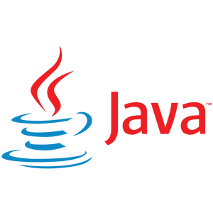
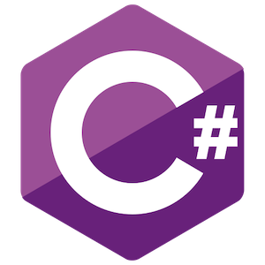
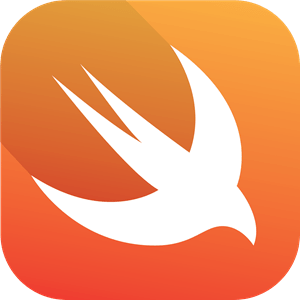

Decoding history
Programming languages can be divided into several categories. The categories provide software developers with different levels of abstraction and opportunities to develop software solutions. Machine code are instructions that are executed and understood by a computer processor. The code consists of binary digits and zeros that indicate actions and operations performed by the processor. Assembly languages are programming languages that provide a low-level abstraction between machine code and higher-level programming languages. Assembly languages use text symbols and abbreviations. Higher-level programming languages are languages designed to allow programmers to write code at a more abstract level. An example of a higher programming language is JavaScript. Fourth-generation languages also called 4GL. Are programming languages designed to facilitate the development of software applications through higher levels of abstraction and automation. An example of a 4Gl language is SQL. Object-oriented languages also called OOP languages are programming languages that make it easier to design and maintain complex systems. An example of an object-oriented language is Python.
1983
C++
Bjarne Stroustrup C++ is relatively close to hardware, which gives a lot of control in terms of memory management, performance and ultimately robust software development. C++ is made by Bjarne Stroustrup
1991
Python
Python is a programming language used for various applications, from web development to data analysis. In simple terms, it's a versatile tool that allows developers to write code to solve different types of problems. Python is known for its readability and ease of use, making it a popular choice for beginners. It is used for tasks like building websites, creating automation scripts, developing software, and analyzing data in fields such as machine learning and scientific research. Python is made by Guido van Rossum

1993
HTML
The most important feature of HTML is that you can link pages and page elements with hyperlinks. It also forms the basis for a Web site. HTML is made by Tim Berners-Lee
1995
Javascript
With javascript you can make your website interactive. For example, you can easily add animations. With javascript you can make your website interactive. For example, you can easily add animations. Javascript is made by Brendan Eich

1995
PHP
PHP is a server-based open-source scripting language that serves primarily for creating dynamic Web pages. PHP is made by Rasmus Lerdorf
1995
Java
Java is a versatile programming language used for creating applications that run on various devices. Known for its platform independence, it's widely used for web apps, mobile apps (especially Android), enterprise systems, and various software applications. Java is made by James Gosling
1996
CSS
CSS is a web development language that styles HTML elements, controlling how text, images, and layout appear on a website. It enables developers to define fonts, colors, spacing, and positioning for consistent and visually appealing designs. By separating structure (HTML) and presentation (CSS), it enhances code modularity and maintainability, ensuring a cohesive and pleasing user experience. CSS is made by Håkon Wium Lie and Bert Bos
2001
C#
C# is a Microsoft-developed programming language used to build versatile software applications for Windows, web, and mobile platforms. It's part of the .NET framework and is popular for creating applications in the Microsoft ecosystem, including Windows apps, Unity games, and server-side applications. In essence, C# provides flexibility and compatibility for a diverse range of software. C# is made by Anders Hejlsberg
2014
Swift
Swift is Apple's programming language for building applications on iOS, macOS, watchOS, and tvOS. It's used to create software for Apple devices, from iPhones to Macs. Known for its speed, safety features, and modern syntax, Swift is popular for developing mobile apps, desktop software, and applications for wearables and smart TVs. In essence, Swift is a user-friendly tool tailored for Apple app development. Swift is made by Chris Lattner
